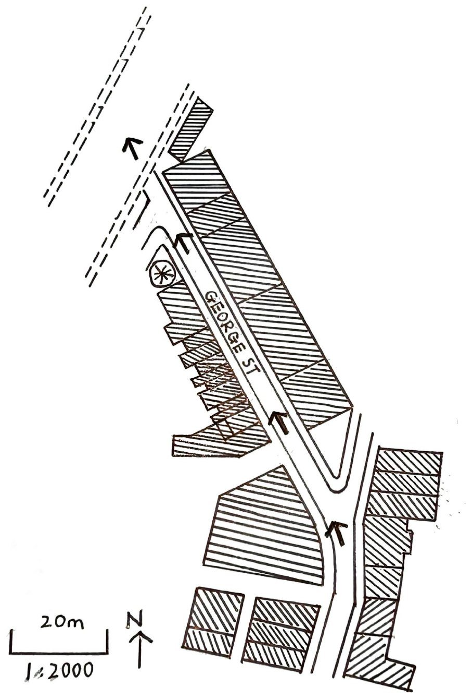
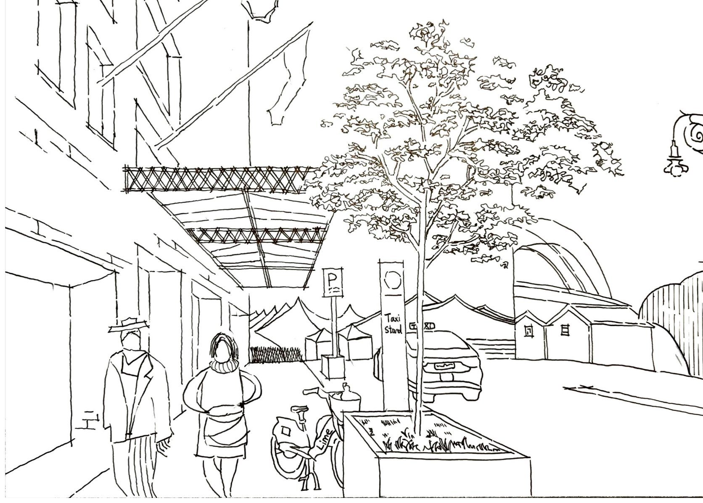
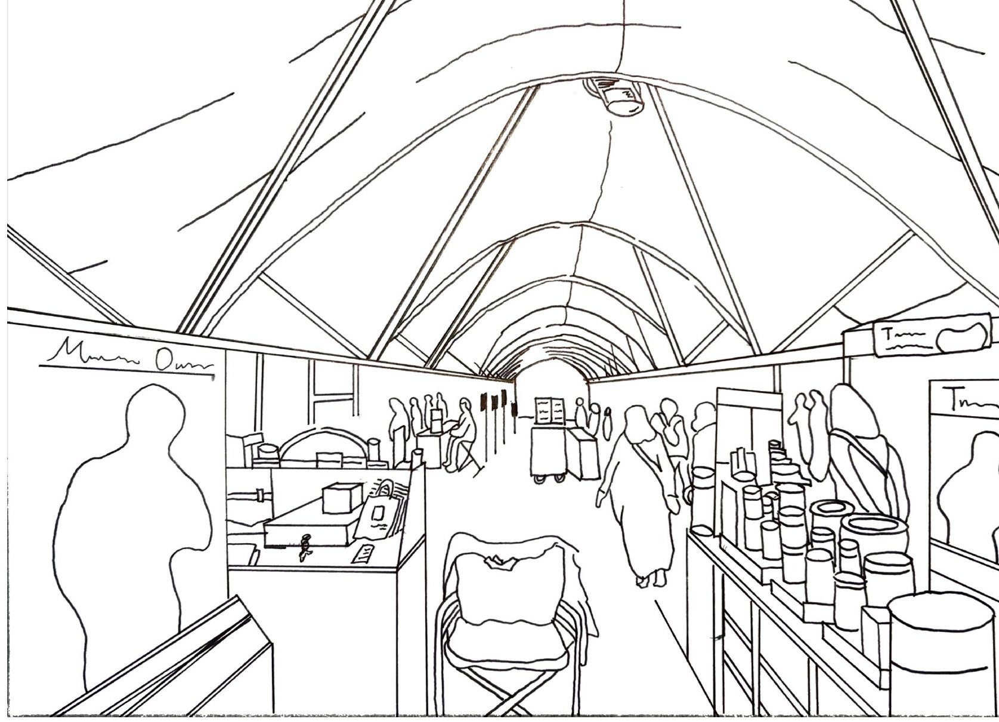
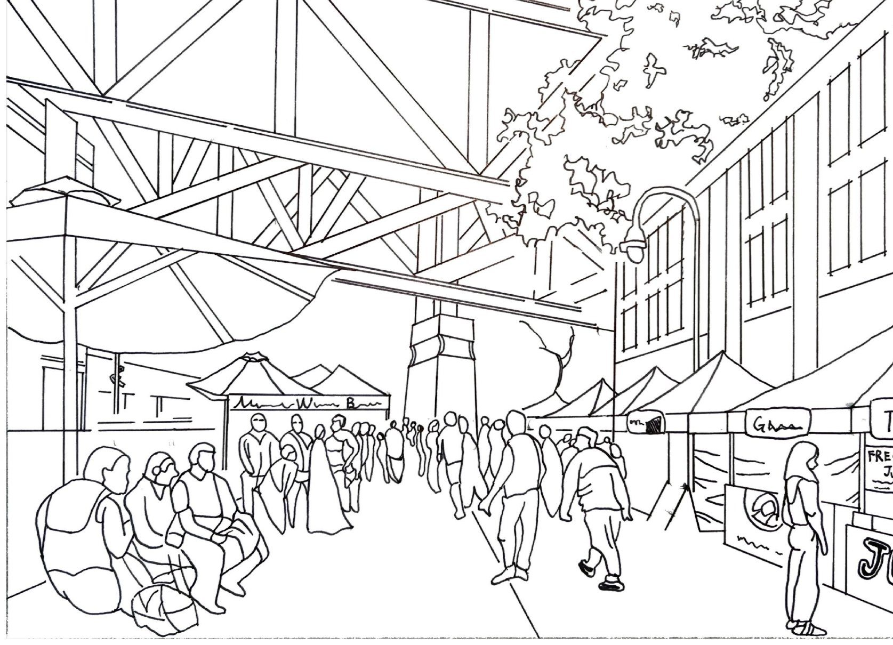
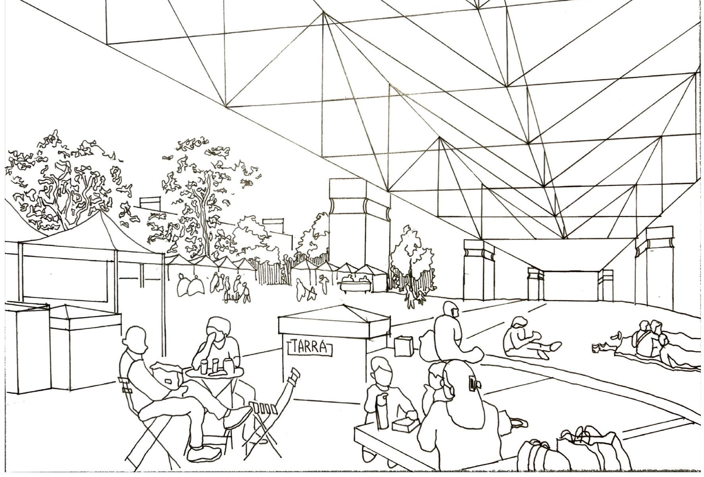

A hand-drawn urban design journal of one walk along George Street in The Rocks, on Gadigal Country. Four sketched views follow the street from heritage shopfronts, through the weekend market and out under the Harbour Bridge, reading how history, trade and everyday life share the same space.
📍 George Street · The Rocks, Sydney
hand-drawn views
4
One continuous walk, sketched in sequence.
weekend market
1
A road that turns into pedestrian space every weekend.
layers of history
3
Gadigal Country, the colonial era and today’s city.
drawn at
1:2000
Figure ground and route plan.

The route.
A figure ground plan of George Street. The arrows follow the walk north toward the Harbour Bridge, with the four views marked along the way.

View 1. Three layers of Sydney.
Red-brick façades and old lamps from the colonial era, the harbour that was Gadigal land, and the bridge arch of the modern city.

View 2. The weekend market.
Every weekend the road becomes a pedestrian market of handmade goods and small start-ups, new public space inside a heritage area.

View 3. A street for people.
Between the market and the bridge, people stroll, chat and sit on the kerb. A small space with real walkability and social life.

View 4. Under the bridge.
Iron above, sandstone below. The lawn under the bridge is where people rest, eat and picnic beside a heritage landmark.